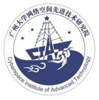
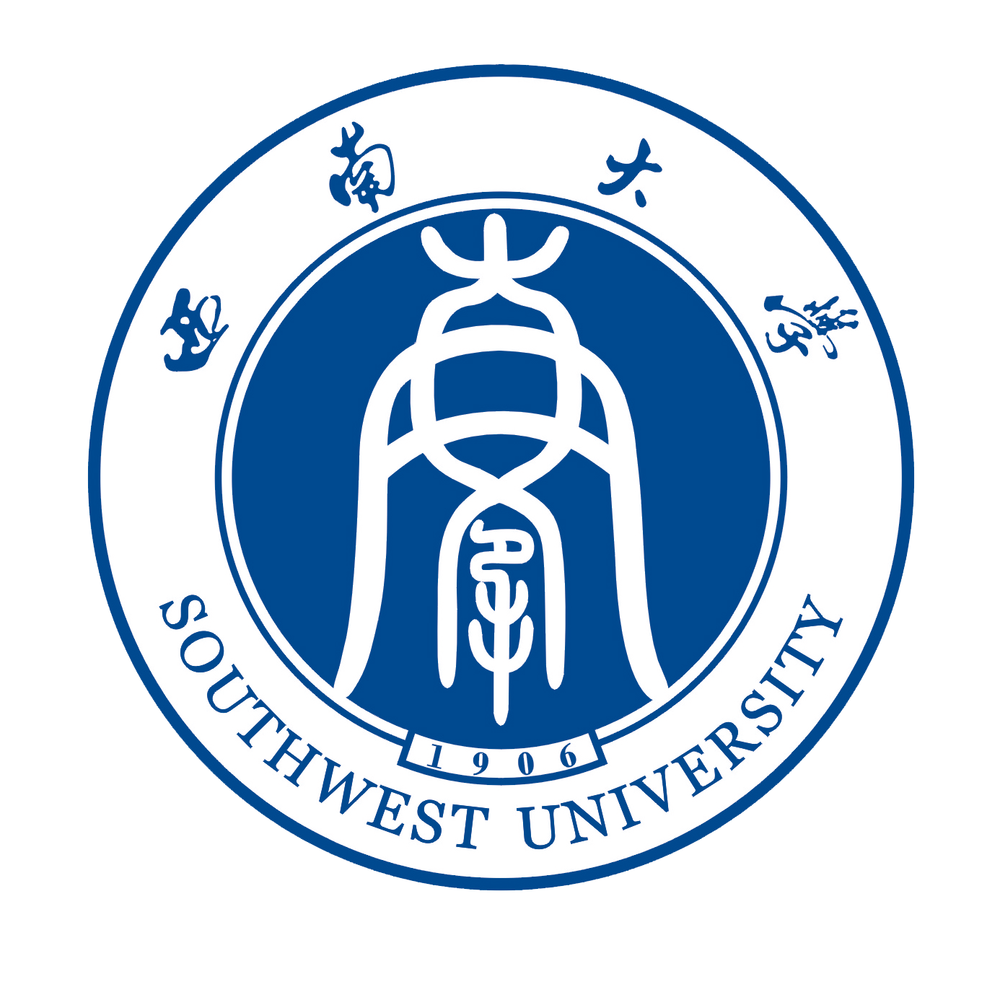

蒋进 (Jin Jiang)
 |
硕士研究生,中共党员 |
简介
我现在是一名硕士二年级的学生(将于2023年6月毕业), 就读于广州大学 网络空间先进技术研究院。 在此之前, 我于2018年6月在 西南大学 电子信息工程学院 通信工程专业获得了学士学位, 并取得辅修金融学双学位。
我的研究兴趣主要包括: 机器学习, 图数据挖掘, 知识图谱, 密码学 等。
教育经历
|  | 硕士 广州大学 (2020.9 ~ 2023.6)
|
|  | 本科 西南大学 (2014.9 ~ 2018.6)
|
![[成绩单]](picture/transcript_swu.jpg){kind=link}
学术论文
Cloud-assisted privacy-conscious large-scale Markowitz portfolio
Yushu Zhang, Jin Jiang, Yong Xiang, Ye Zhu, Liangtian Wan and Xiyuan Xie
Information Sciences (INS), 2019. [SCI, IF:6.795][PDF]
A Survey on Translating Embedding based Entity Alignment in Knowledge Graphs
Jin Jiang, Mohan Li and Zhaoquan Gu
International Conference on Data Science in Cyberspace (DSC), 2021. [EI][PDF]
校园与工作经历
(2022.07-2022.09) 中国民航局第二研究所
信息安全工程师（成都东部新区“蓉耀东进派”实习生计划）
研究基于KNN的飞行器网格定位校验方法，AeroMACS 同邻频无线电干扰分析，民航等保制度整理等
(2018.06-2019.03) 中国民航信息网络股份有限公司重庆研发中心
Java开发工程师
负责DP客票数据推送代码开发与日常维护，完成系统配置加密升级工作
在spring boot框架下开发后台管理系统，并使用vue.js构建前端页面
(2017.07) 四川大学网络空间安全学院 - 暑期夏令营
优秀营员
参加四川大学网络空间安全学院全国优秀大学生暑期夏令营并通过相关考核。
(2015.09-2016.06) 西南大学教务处教学信息中心
秘书部部长
负责整个部门的管理事务与培训事务，参与组织“本科知识一百问”等校级活动